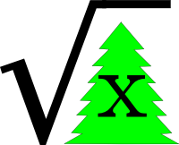

sencjw
a place I put stuff
The Square Root of Christmas
March 5th is the Square Root of Christmas.

The Sqrt(xmas) logo
I just wanted to make the announcement, if anyone happened to be unaware. The reason for the holiday, if you haven’t guessed already, is because sqrt(1225) = 35. Translating those numbers into calendar dates gives us the square root of Christmas 12/25 falling on 3/5. It just so happens that there is another big nerd holiday in March, Pi Day (3/14). Why not connect these two dates with a week(ish) long nerd celebration? I hereby declare that:
- March 5th shall be known as the Square Root of Christmas
- The 10-day interval between the Square Root of Christmas and Pi Day shall be known as Nerdigras
This page originally appeared at http://twopoint718.blogspot.com/2009/03/march-5-is-square-root-of-christmas.html since I’ve moved my blog, I’m also moving this page. This page (http://sencjw.com/the_square_root_of_christmas.html) should be considered canonical.